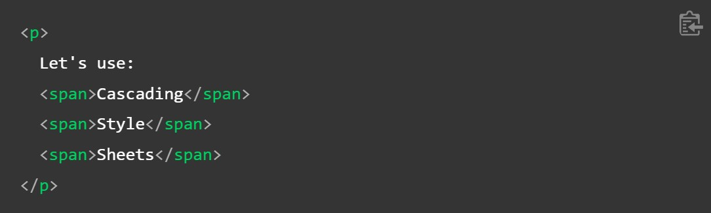
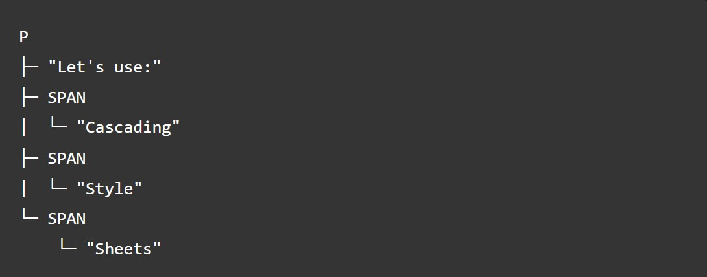
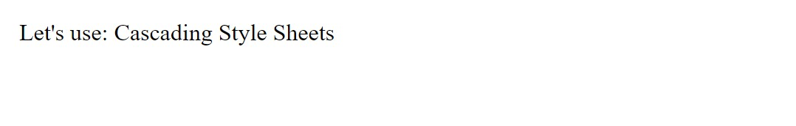
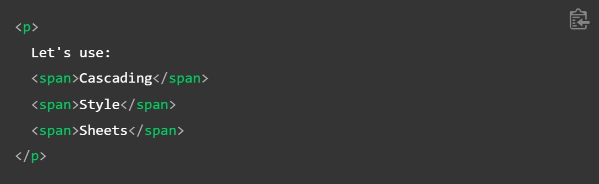
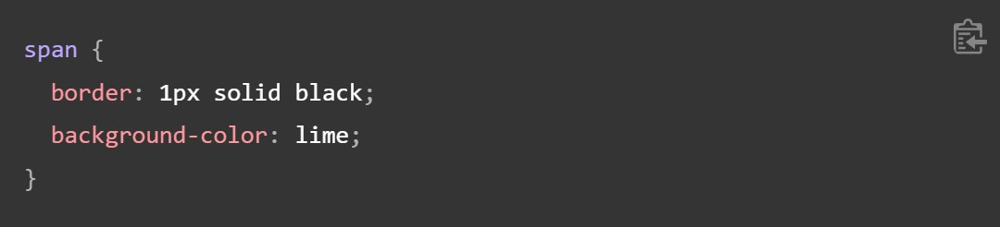
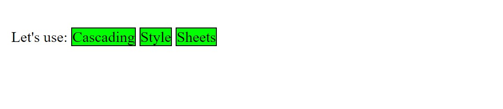
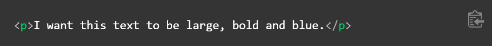
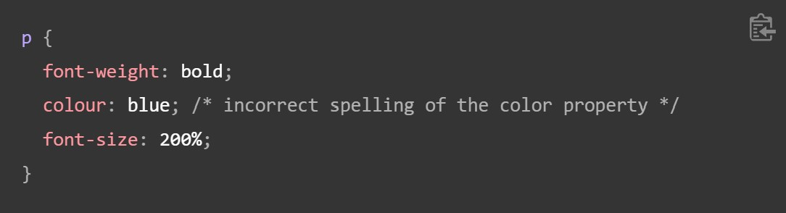
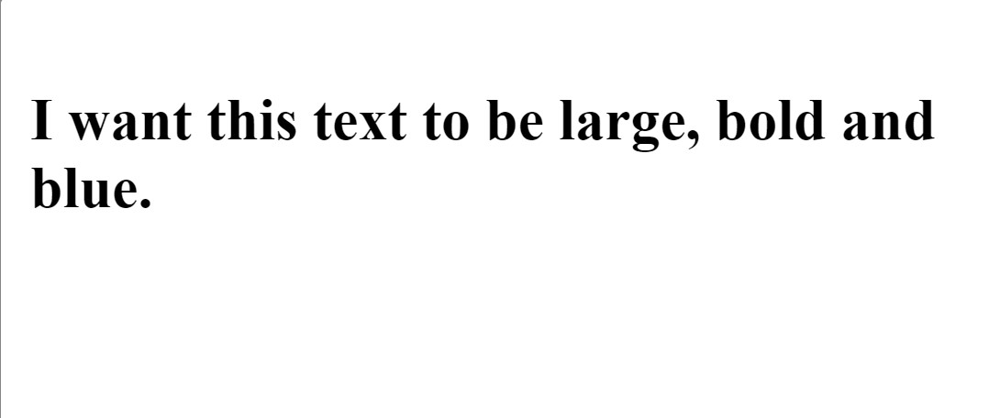
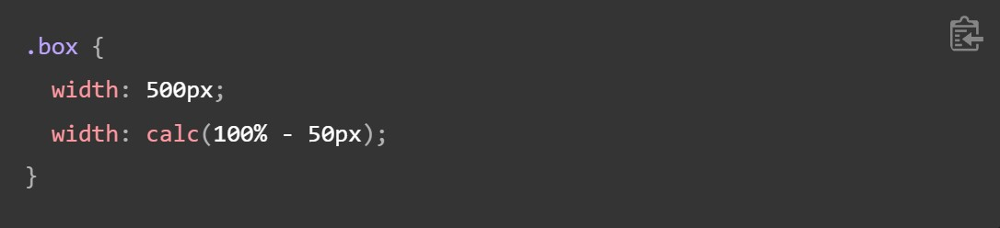

How does CSS actually work?
When a browser displays a document, it must combine the document's content with its style information. It processes the document in a number of stages, which we've listed below. Bear in mind that this is a very simplified version of what happens when a browser loads a webpage, and that different browsers will handle the process in different ways. But this is roughly what happens.
- The browser loads the HTML (e.g. receives it from the network).
- It converts the HTML into a DOM (Document Object Model). The DOM represents the document in the computer's memory. The DOM is explained in a bit more detail in the next section.
- The browser then fetches most of the resources that are linked to by the HTML document, such as embedded images, videos, and even linked CSS! JavaScript is handled a bit later on in the process, and we won't talk about it here to keep things simpler.
- The browser parses the fetched CSS, and sorts the different rules by their selector types into different "buckets", e.g. element, class, ID, and so on. Based on the selectors it finds, it works out which rules should be applied to which nodes in the DOM, and attaches style to them as required (this intermediate step is called a render tree).
- The render tree is laid out in the structure it should appear in after the rules have been applied to it.
- The visual display of the page is shown on the screen (this stage is called painting).
The following diagram also offers a simple view of the process.

About the DOM
A DOM has a tree-like structure. Each element, attribute, and piece of text in the markup language becomes a DOM node in the tree structure. The nodes are defined by their relationship to other DOM nodes. Some elements are parents of child nodes, and child nodes have siblings.
Understanding the DOM helps you design, debug and maintain your CSS because the DOM is where your CSS and the document's content meet up. When you start working with browser DevTools you will be navigating the DOM as you select items in order to see which rules apply.
A real DOM representation
Rather than a long, boring explanation, let's look at an example to see how a real HTML snippet is converted into a DOM.
Take the following HTML code:
In the DOM, the node corresponding to our
element is a parent. Its children are a text node and the three nodes corresponding to our "span" elements. The SPAN nodes are also parents, with text nodes as their children:
This is how a browser interprets the previous HTML snippet — it renders the above DOM tree and then outputs it in the browser like so:
Applying CSS to the DOM
Let's say we add some CSS to our document, to style it. Again, the HTML is as follows:
Let's suppose we apply the following CSS to it:
The browser parses the HTML and creates a DOM from it. Next, it parses the CSS. Since the only rule available in the CSS has a span selector, the browser sorts the CSS very quickly! It applies that rule to each one of the three ?"span's" then paints the final visual representation to the screen.
The updated output is as follows:
In our Debugging CSS article in the next module we will be using browser DevTools to debug CSS problems, and will learn more about how the browser interprets CSS.
What happens if a browser encounters CSS it doesn't understand?
The browser support section of the what is browser support lesson mentioned that browsers do not necessarily implement new CSS features at the same time. In addition, many people are not using the latest version of a browser. Given that CSS is being developed all the time, and is therefore ahead of what browsers can recognize, you might wonder what happens if a browser encounters a CSS selector or declaration it doesn't recognize.
The answer is that it does nothing, and just moves on to the next bit of CSS!
If a browser is parsing your rules, and encounters a property or value that it doesn't understand, it ignores it and moves on to the next declaration. It will do this if you have made an error and misspelled a property or value, or if the property or value is just too new and the browser doesn't yet support it.
Similarly, if a browser encounters a selector that it doesn't understand, it will just ignore the whole rule and move on to the next one.
In the example below I have used the British English spelling for color, which makes that property invalid as it is not recognized. So my paragraph has not been colored blue. All of the other CSS have been applied however; only the invalid line is ignored.
  This behavior is very useful. It means that you can use new CSS as an enhancement, knowing that no error will occur if it is not understood — the browser will either get the new feature or not. This enables basic fallback styling.
This works particularly well when you want to use a value that is quite new and not supported everywhere. For example, some older browsers do not support calc() as a value. I might give a fallback width for a box in pixels, then go on to give a width with a calc() value of 100% - 50px. Old browsers will use the pixel version, ignoring the line about calc() as they don't understand it. New browsers will interpret the line using pixels, but then override it with the line using calc() as that line appears later in the cascade.
We will look at many more ways to support varying browsers in later lessons.
Summary
You've nearly finished this module — we only have one more thing to do. In the Styling a biography page assessment you'll use your new knowledge to restyle an example, testing out some CSS in the process.